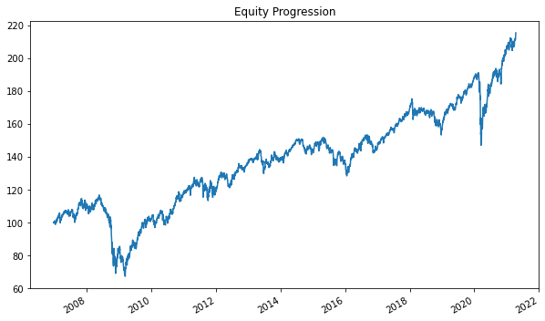
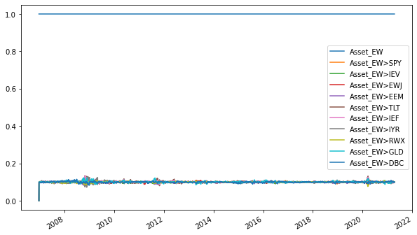
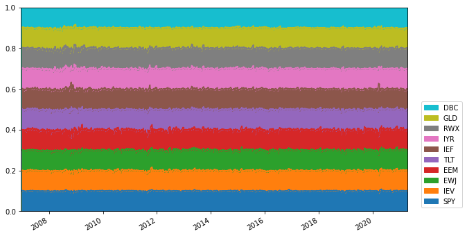
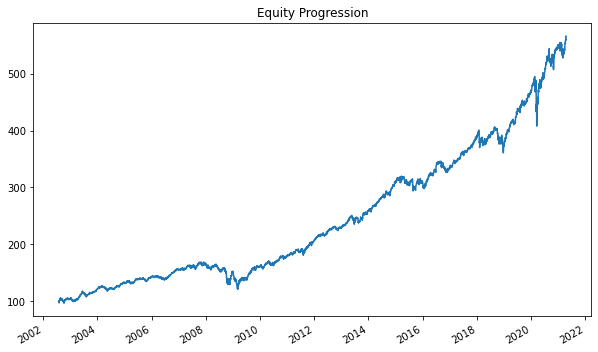
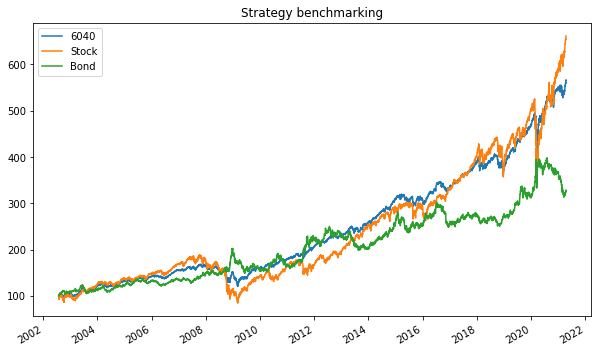
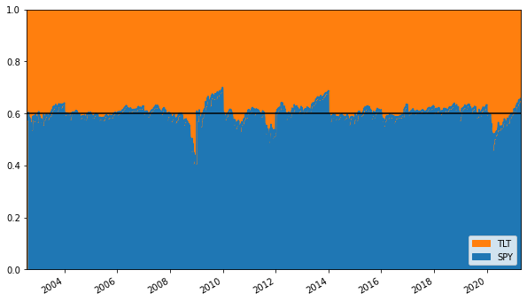
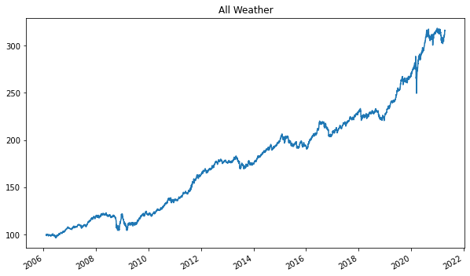
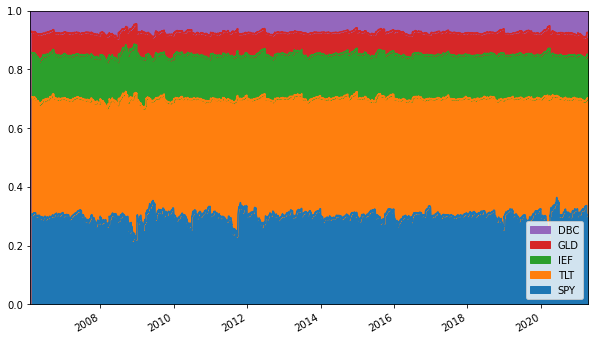

1. 개요¶
import bt
# 1. 가격 데이터의 수집
data = bt.get("SPY, TLT")
data.head()
| spy | tlt | |
|---|---|---|
| Date | ||
| 2016-04-25 | 189.760254 | 114.352341 |
| 2016-04-26 | 190.042282 | 113.833504 |
| 2016-04-27 | 190.433411 | 114.969589 |
| 2016-04-28 | 188.705063 | 115.443703 |
| 2016-04-29 | 187.686279 | 115.738945 |
# 앞서 저장한 데이터 불러오기
import pandas as pd
prices = pd.read_csv('data/asset_data.csv', index_col = 0)
prices.index = pd.to_datetime(prices.index)
# 2. 전략의 정의
# 전체 자산 동일비중, 매월 말 리밸런싱
bt_strategy = bt.Strategy("Asset_EW",
[bt.algos.SelectAll(),
bt.algos.WeighEqually(),
bt.algos.RunMonthly(),
bt.algos.Rebalance()
])
# 3. 백테스트
# 백테스트 생성
data = prices.dropna()
bt_backtest = bt.Backtest(bt_strategy, data)
# 백테스트 실행
bt_result = bt.run(bt_backtest)
# 4. 결과에 대한 평가
import matplotlib.pyplot as plt
%matplotlib inline
bt_result.plot(figsize = (10, 6), legend = False)
plt.show()

bt_result.plot_weights(figsize = (10, 6))

bt_result.get_security_weights().tail()
| SPY | IEV | EWJ | EEM | TLT | IEF | IYR | RWX | GLD | DBC | |
|---|---|---|---|---|---|---|---|---|---|---|
| 2021-04-12 | 0.102115 | 0.100785 | 0.099616 | 0.098304 | 0.099428 | 0.099601 | 0.100404 | 0.100940 | 0.099643 | 0.098897 |
| 2021-04-13 | 0.101777 | 0.100717 | 0.099622 | 0.098093 | 0.099546 | 0.099388 | 0.100378 | 0.101162 | 0.099721 | 0.099332 |
| 2021-04-14 | 0.101284 | 0.100476 | 0.099294 | 0.098448 | 0.099088 | 0.099124 | 0.099623 | 0.101784 | 0.099146 | 0.101469 |
| 2021-04-15 | 0.101337 | 0.100342 | 0.098756 | 0.098341 | 0.099728 | 0.098751 | 0.100359 | 0.101317 | 0.099729 | 0.101079 |
| 2021-04-16 | 0.101397 | 0.100979 | 0.098625 | 0.098416 | 0.098879 | 0.098433 | 0.100096 | 0.101786 | 0.100371 | 0.100757 |
ax = bt_result.get_security_weights().plot.area(figsize = (10, 6), ylim = [0, 1], legend = False)
handles, labels = ax.get_legend_handles_labels()
plt.margins(0, 0)
plt.legend(reversed(handles), reversed(labels), loc='lower right', bbox_to_anchor=(1.15, 0))
plt.show()

bt_result.stats.head(10)
| Asset_EW | |
|---|---|
| start | 2006-12-18 00:00:00 |
| end | 2021-04-16 00:00:00 |
| rf | 0 |
| total_return | 1.15357 |
| cagr | 0.0550029 |
| max_drawdown | -0.423533 |
| calmar | 0.129867 |
| mtd | 0.0372992 |
| three_month | 0.0430328 |
| six_month | 0.12863 |
#bt_result.prices.head()
#bt_result.prices.to_returns()
2. 6대 4 포트폴리오¶
class OrderedWeights(bt.Algo):
def __init__(self, weights):
self.target_weights = weights
def __call__(self, target):
target.temp['weights'] = dict(zip(target.temp['selected'], self.target_weights))
return True
data = prices[['SPY', 'TLT']].dropna()
bt_6040 = bt.Strategy('6040',
[bt.algos.SelectAll(),
bt.algos.WeighSpecified(SPY = 0.6, TLT = 0.4),
bt.algos.RunYearly(),
bt.algos.Rebalance()])
bt_6040_backtest = bt.Backtest(bt_6040, data)
bt_6040_result = bt.run(bt_6040_backtest)
bt_6040_result.plot(figsize = (10, 6), legend = False)
plt.show()

def buy_and_hold(data, name, delay = 0):
# Define the benchmark strategy
bt_strategy = bt.Strategy(name,
[bt.algos.RunAfterDays(delay),
bt.algos.RunOnce(),
bt.algos.SelectAll(),
bt.algos.WeighEqually(),
bt.algos.Rebalance()])
# Return the backtest
return bt.Backtest(bt_strategy, data)
# Create benchmark strategy backtest
Stock = buy_and_hold(data[['SPY']], name='Stock')
Bond = buy_and_hold(data[['TLT']], name='Bond')
# Run all backtests and plot the resutls
bt_results = bt.run(bt_6040_backtest, Stock, Bond)
bt_results.plot(figsize = (10, 6), title='Strategy benchmarking')
plt.show()

ax = bt_6040_result.get_security_weights().plot.area(figsize = (10, 6), ylim = [0, 1], legend = False)
handles, labels = ax.get_legend_handles_labels()
plt.axhline(y=0.6, color='black', linestyle='-')
plt.margins(0, 0)
plt.legend(reversed(handles), reversed(labels), loc='lower right')
plt.show()

2.1 올웨더 포트폴리오¶
data = prices[['SPY', 'TLT', 'IEF', 'GLD', 'DBC']].dropna()
bt_aw = bt.Strategy('All_Weather',
[bt.algos.SelectAll(),
bt.algos.WeighSpecified(SPY = 0.3, TLT = 0.4, IEF = 0.15, GLD = 0.075, DBC = 0.075),
bt.algos.RunQuarterly(),
bt.algos.Rebalance()])
bt_aw_backtest = bt.Backtest(bt_aw, data)
bt_aw_result = bt.run(bt_aw_backtest)
bt_aw_result.plot(figsize = (10, 6), title = 'All Weather', legend = False)
plt.show()

ax = bt_aw_result.get_security_weights().plot.area(figsize = (10, 6), ylim = [0, 1], legend = False)
handles, labels = ax.get_legend_handles_labels()
plt.margins(0, 0)
plt.legend(reversed(handles), reversed(labels), loc='lower right')
plt.show()

3. 트레이딩 전략¶
# SMA
import talib
data = prices[['SPY']].dropna()
sma = talib.SMA(data['SPY'], timeperiod = 200).to_frame()
sma.columns = ['SPY']
bt_sma = bt.Strategy('Timing',
[bt.algos.RunAfterDays(200),
bt.algos.SelectWhere(data > sma),
bt.algos.WeighEqually(),
bt.algos.Rebalance()])
bt_sma_backtest = bt.Backtest(bt_sma, data)
Stock = buy_and_hold(data, name='Stock', delay = 200)
bt_sma_result = bt.run(bt_sma_backtest, Stock)
start = sma.notna().idxmax()[0]
bt_sma_result.prices[start:].plot()
<AxesSubplot:>
bt.merge(
bt_sma_result.backtests['Stock'].stats.drawdown,
bt_sma_result.backtests['Timing'].stats.drawdown
)[start:].plot()
<AxesSubplot:>
bt_sma_result.backtests['Timing'].stats.drawdown_details.sort_values('drawdown').head(5)
| Start | End | Length | drawdown | |
|---|---|---|---|---|
| 50 | 2007-07-20 00:00:00 | 2009-11-16 00:00:00 | 850 | -0.206761 |
| 62 | 2010-04-26 00:00:00 | 2013-02-19 00:00:00 | 1030 | -0.204955 |
| 175 | 2020-02-20 00:00:00 | 2020-11-16 00:00:00 | 270 | -0.174243 |
| 0 | 2002-01-07 00:00:00 | 2003-06-11 00:00:00 | 520 | -0.119693 |
| 164 | 2018-09-21 00:00:00 | 2019-11-15 00:00:00 | 420 | -0.111054 |
bt_sma_result.stats
| Timing | Stock | |
|---|---|---|
| start | 1999-12-30 00:00:00 | 1999-12-30 00:00:00 |
| end | 2021-04-16 00:00:00 | 2021-04-16 00:00:00 |
| rf | 0 | 0 |
| total_return | 2.87561 | 3.45028 |
| cagr | 0.0656831 | 0.0726249 |
| max_drawdown | -0.206761 | -0.551884 |
| calmar | 0.317677 | 0.131595 |
| mtd | 0.0514721 | 0.051472 |
| three_month | 0.112842 | 0.112842 |
| six_month | 0.209009 | 0.209009 |
| ytd | 0.118259 | 0.118259 |
| one_year | 0.415716 | 0.517061 |
| three_year | 0.12259 | 0.181041 |
| five_year | 0.13071 | 0.169907 |
| ten_year | 0.103454 | 0.145582 |
| incep | 0.0656831 | 0.0726249 |
| daily_sharpe | 0.645103 | 0.460267 |
| daily_sortino | 0.948541 | 0.716947 |
| daily_mean | 0.0695704 | 0.0889127 |
| daily_vol | 0.107844 | 0.193177 |
| daily_skew | -0.831697 | -0.0102927 |
| daily_kurt | 5.91109 | 13.5291 |
| best_day | 0.0440401 | 0.145193 |
| worst_day | -0.0576485 | -0.109423 |
| monthly_sharpe | 0.688334 | 0.549788 |
| monthly_sortino | 1.20034 | 0.894244 |
| monthly_mean | 0.0686274 | 0.0811839 |
| monthly_vol | 0.0997007 | 0.147664 |
| monthly_skew | -0.291327 | -0.566885 |
| monthly_kurt | 1.31079 | 1.31388 |
| best_month | 0.108776 | 0.126982 |
| worst_month | -0.106214 | -0.165183 |
| yearly_sharpe | 0.614343 | 0.497611 |
| yearly_sortino | 2.62888 | 0.938704 |
| yearly_mean | 0.0690108 | 0.0848173 |
| yearly_vol | 0.112333 | 0.170449 |
| yearly_skew | 0.514043 | -0.955794 |
| yearly_kurt | -0.542607 | 1.13324 |
| best_year | 0.323068 | 0.323072 |
| worst_year | -0.0911411 | -0.367943 |
| avg_drawdown | -0.0170089 | -0.019241 |
| avg_drawdown_days | 32.9385 | 31.4676 |
| avg_up_month | 0.0273301 | 0.0314213 |
| avg_down_month | -0.0152272 | -0.0343279 |
| win_year_perc | 0.545455 | 0.772727 |
| twelve_month_win_perc | 0.617886 | 0.760163 |
동적자산배분¶
import pandas as pd
import talib
import bt
prices_gdaa = prices.copy().dropna()
bt_gdaa = bt.Strategy('Dynamic Asset Allocation',
[
bt.algos.SelectAll(),
bt.algos.SelectMomentum(n = 5,lookback = pd.DateOffset(years = 1)),
bt.algos.RunMonthly(),
#bt.algos.WeighEqually(),
bt.algos.WeighMeanVar(lookback = pd.DateOffset(years = 1), bounds = (0.1, 0.3), covar_method="standard"),
bt.algos.Rebalance()
])
bt_aw_backtest = bt.Backtest(bt_gdaa, prices_gdaa)
bt_aw_result = bt.run(bt_aw_backtest)
%matplotlib inline
bt_aw_result.plot()
<AxesSubplot:title={'center':'Equity Progression'}>
ax = bt_aw_result.get_security_weights().plot.area(figsize = (10, 6), ylim = [0, 1], legend = False)
handles, labels = ax.get_legend_handles_labels()
plt.margins(0, 0)
plt.legend(reversed(handles), reversed(labels), loc='lower right')
plt.show()
---------------------------------------------------------------------------
NameError Traceback (most recent call last)
<ipython-input-24-00d19bf5fedb> in <module>
1 ax = bt_aw_result.get_security_weights().plot.area(figsize = (10, 6), ylim = [0, 1], legend = False)
2 handles, labels = ax.get_legend_handles_labels()
----> 3 plt.margins(0, 0)
4 plt.legend(reversed(handles), reversed(labels), loc='lower right')
5 plt.show()
NameError: name 'plt' is not defined
bt_aw_result.get_security_weights()["2010"]
| DBC | GLD | EEM | TLT | IEV | IEF | IYR | EWJ | SPY | RWX | |
|---|---|---|---|---|---|---|---|---|---|---|
| 2010-01-04 | 0.0 | 0.299968 | 0.299998 | 0.0 | 0.099985 | 0.0 | 0.099999 | 0.0 | 0.000000 | 0.199992 |
| 2010-01-05 | 0.0 | 0.298406 | 0.300875 | 0.0 | 0.099654 | 0.0 | 0.099808 | 0.0 | 0.000000 | 0.201199 |
| 2010-01-06 | 0.0 | 0.301949 | 0.300132 | 0.0 | 0.099324 | 0.0 | 0.099311 | 0.0 | 0.000000 | 0.199227 |
| 2010-01-07 | 0.0 | 0.301400 | 0.299704 | 0.0 | 0.099438 | 0.0 | 0.100638 | 0.0 | 0.000000 | 0.198762 |
| 2010-01-08 | 0.0 | 0.301372 | 0.300561 | 0.0 | 0.099730 | 0.0 | 0.099462 | 0.0 | 0.000000 | 0.198818 |
| ... | ... | ... | ... | ... | ... | ... | ... | ... | ... | ... |
| 2010-12-27 | 0.0 | 0.292209 | 0.099317 | 0.0 | 0.000000 | 0.0 | 0.301624 | 0.0 | 0.203921 | 0.102778 |
| 2010-12-28 | 0.0 | 0.295117 | 0.098782 | 0.0 | 0.000000 | 0.0 | 0.300930 | 0.0 | 0.202938 | 0.102083 |
| 2010-12-29 | 0.0 | 0.294756 | 0.099569 | 0.0 | 0.000000 | 0.0 | 0.300836 | 0.0 | 0.202113 | 0.102578 |
| 2010-12-30 | 0.0 | 0.293539 | 0.100158 | 0.0 | 0.000000 | 0.0 | 0.301458 | 0.0 | 0.201956 | 0.102741 |
| 2010-12-31 | 0.0 | 0.295774 | 0.100387 | 0.0 | 0.000000 | 0.0 | 0.299678 | 0.0 | 0.201063 | 0.102950 |
252 rows × 10 columns
bt_aw_result.prices.to_csv(
ret_yr = bt_aw_result.prices.to_returns().resample('Y').apply(lambda x: (x+1).prod() - 1)
ret_yr.index = ret_yr.index.strftime('%Y')
rets = prices.pct_change().dropna()
z = rets["2008-12-31" : "2009-12-31"].copy()
z.head()
| SPY | IEV | EWJ | EEM | TLT | IEF | IYR | RWX | GLD | DBC | |
|---|---|---|---|---|---|---|---|---|---|---|
| Date | ||||||||||
| 2008-12-31 | 0.014275 | 0.010711 | 0.008421 | 0.013393 | -0.020919 | -0.011040 | 0.047552 | 0.008942 | 0.007218 | 0.041790 |
| 2009-01-02 | 0.030142 | 0.010597 | 0.005219 | 0.047657 | -0.025137 | -0.014311 | -0.027397 | 0.034712 | -0.003352 | 0.034922 |
| 2009-01-05 | -0.001184 | -0.009533 | -0.024922 | 0.012997 | -0.025784 | -0.001751 | -0.019608 | -0.007138 | -0.020295 | 0.010488 |
| 2009-01-06 | 0.006678 | 0.012191 | -0.009585 | 0.022642 | -0.010058 | -0.000618 | 0.049577 | 0.027319 | 0.007694 | 0.026173 |
| 2009-01-07 | -0.029956 | -0.011728 | -0.009677 | -0.057565 | 0.003921 | 0.000206 | -0.033817 | -0.012946 | -0.027957 | -0.051011 |
cum = z.add(1).prod().add(-1)
K = cum.rank(ascending = False) <= 5
covmat = pd.DataFrame.cov(rets.loc[:, K])
cum
SPY 0.281554
IEV 0.302851
EWJ 0.040125
EEM 0.712172
TLT -0.234420
IEF -0.076245
IYR 0.367880
RWX 0.376575
GLD 0.249243
DBC 0.210423
dtype: float64
cum.rank(ascending = False)
SPY 5.0
IEV 4.0
EWJ 8.0
EEM 1.0
TLT 10.0
IEF 9.0
IYR 3.0
RWX 2.0
GLD 6.0
DBC 7.0
dtype: float64
covmat
| SPY | IEV | EEM | IYR | RWX | |
|---|---|---|---|---|---|
| SPY | 0.000167 | 0.000178 | 0.000213 | 0.000200 | 0.000142 |
| IEV | 0.000178 | 0.000242 | 0.000258 | 0.000216 | 0.000183 |
| EEM | 0.000213 | 0.000258 | 0.000370 | 0.000267 | 0.000212 |
| IYR | 0.000200 | 0.000216 | 0.000267 | 0.000392 | 0.000186 |
| RWX | 0.000142 | 0.000183 | 0.000212 | 0.000186 | 0.000194 |
from cvxopt import matrix
from cvxopt import solvers
import numpy as np
P = matrix(np.array(covmat), tc = 'd') # 분산-공분산 행렬
q = matrix(np.zeros(5), tc = 'd') # 0 행렬
G = matrix(np.concatenate( (np.diag(np.repeat(-1, 5)), np.diag(np.repeat(1, 5)))) , tc = 'd') # 부등식 제약조건의 좌변
h = matrix(np.concatenate( (np.repeat(-0.1, 5), np.repeat(0.3, 5))) , tc = 'd') # 부등식 제약조건의 우변
A = matrix(np.repeat(1, 5), tc = 'd').T # 등식 제약조건의 좌변
b = matrix(1, tc = 'd') # 등식 제약조건의 우변
sol = solvers.qp(P,q,G,h, A, b)
res = np.array(sol['x']).flatten().round(2)
print(res)
pcost dcost gap pres dres
0: 1.0956e-04 -9.9991e-01 1e+00 0e+00 2e-16
1: 1.0956e-04 -9.9130e-03 1e-02 9e-17 3e-16
2: 1.0950e-04 -1.2908e-05 1e-04 6e-17 6e-18
3: 1.0561e-04 8.9741e-05 2e-05 8e-17 8e-19
4: 9.6307e-05 9.5104e-05 1e-06 8e-17 6e-20
5: 9.5876e-05 9.5851e-05 3e-08 1e-16 4e-20
Optimal solution found.
[0.3 0.2 0.1 0.1 0.3]
import matplotlib.pyplot as plt
import numpy as np
import pandas as pd
import ffn
import bt
rf = 0.04
np.random.seed(1)
mus = np.random.normal(loc=0.05,scale=0.02,size=5) + rf
sigmas = (mus - rf)/0.3 + np.random.normal(loc=0.,scale=0.01,size=5)
num_years = 10
num_months_per_year = 12
num_days_per_month = 21
num_days_per_year = num_months_per_year*num_days_per_month
rdf = pd.DataFrame(
index = pd.date_range(
start="2008-01-02",
periods=num_years*num_months_per_year*num_days_per_month,
freq="B"
),
columns=['foo','bar','baz','fake1','fake2']
)
for i,mu in enumerate(mus):
sigma = sigmas[i]
rdf.iloc[:,i] = np.random.normal(
loc=mu/num_days_per_year,
scale=sigma/np.sqrt(num_days_per_year),
size=rdf.shape[0]
)
pdf = np.cumprod(1+rdf)*100
pdf.plot()
<AxesSubplot:>
sma = pdf.rolling(window=num_days_per_month*12,center=False).median().shift(1)
plt.plot(pdf.index,pdf['foo'])
plt.plot(sma.index,sma['foo'])
plt.show()
<ipython-input-2-fa2c632b9abb>:4: UserWarning: Matplotlib is currently using agg, which is a non-GUI backend, so cannot show the figure.
plt.show()
tsmom_ew_strat = bt.Strategy(
'tsmom_ew',
[
bt.algos.RunDaily(),
bt.algos.SelectWhere(pdf > sma),
bt.algos.WeighEqually(),
bt.algos.LimitWeights(limit=0.2),
bt.algos.Rebalance()
]
)
# (pdf > sma).tail()
tsmom_ew_bt = bt.Backtest(
tsmom_ew_strat,
pdf,
initial_capital=50000000.0,
commissions= lambda q, p: max(100, abs(q) * 0.0021),
integer_positions=False,
progress_bar=True
)
tsmom_ew_res = bt.run(tsmom_ew_bt)
tsmom_ew
0% [############################# ] 100% | ETA: 00:00:00
import matplotlib.pyplot as plt
%matplotlib inline
tsmom_ew_res.get_security_weights().plot.area()
<AxesSubplot:>
Parent, Children
import bt
tickers = {
'equity':['ITOT', 'IVV', 'IJH', 'IJR', 'IUSG', 'IUSV', 'IJK', 'IJJ', 'IJS', 'IJT', 'OEF', 'IWC'],
'bond':['AGG', 'LQD', 'GOVT', 'MBB', 'MUB', 'TIP', 'SHY', 'IEF', 'TLT', 'HYG', 'FLOT', 'CMBS'],
}
prices = bt.data.get(tickers['equity'] + tickers['bond'], clean_tickers=False)
equity = bt.Strategy('t1',
algos = [bt.algos.RunQuarterly(),
bt.algos.SelectAll(),
bt.algos.SelectMomentum(n=2,lookback=pd.DateOffset(months=3)),
bt.algos.WeighInvVol(lookback=pd.DateOffset(years=1),),
bt.algos.Rebalance()],
children = tickers['equity']
)
bond = bt.Strategy('t2',
algos = [bt.algos.RunQuarterly(),
bt.algos.SelectAll(),
bt.algos.SelectMomentum(n=2,lookback=pd.DateOffset(months=6)),
bt.algos.WeighEqually(),
bt.algos.Rebalance()],
children = tickers['equity']
)
pooled = bt.Strategy('pooled',
algos = [bt.algos.RunQuarterly(),
bt.algos.SelectAll(),
bt.algos.WeighSpecified(t1=0.8,t2=0.2),
bt.algos.Rebalance()],
children = [equity,bond]
)
backtest_pooled = bt.Backtest(pooled,prices)
report = bt.run(backtest_pooled)
report.get_security_weights().plot.area()
<AxesSubplot:>
data = bt.get('aapl,msft,c,gs,ge', start='2010-01-01')
# calculate moving average DataFrame using pandas' rolling_mean
import pandas as pd
# a rolling mean is a moving average, right?
sma = data.rolling(50).mean()
# first we create the Strategy
s = bt.Strategy('above50sma', [bt.algos.SelectWhere(data > sma),
bt.algos.WeighEqually(),
bt.algos.LimitWeights(limit=0.2),
bt.algos.Rebalance()])
# now we create the Backtest
t = bt.Backtest(s, data)
# and let's run it!
res = bt.run(t)
res.get_security_weights().to_csv('11.csv')
res.get_security_weights().sum(axis = 1).to_csv('1.csv')
prices = bt.data.get('SPY, TLT')
import talib
sma = prices.apply(lambda x: talib.SMA(x, 200))
mom_a = bt.Strategy('mom_a', [bt.algos.SelectWhere(prices[['spy']] > sma[['spy']]),
bt.algos.RunMonthly(),
bt.algos.WeighEqually(),
bt.algos.Rebalance()],
children = ['spy'])
mom_b = bt.Strategy('mom_b', [bt.algos.SelectWhere(prices[['tlt']] > sma[['tlt']]),
bt.algos.RunMonthly(),
bt.algos.WeighEqually(),
bt.algos.Rebalance()],
children = ['tlt'])
parent = bt.Strategy('parent', [bt.algos.RunMonthly(),
bt.algos.SelectAll(),
bt.algos.WeighEqually(),
bt.algos.Rebalance()],
children = [mom_a, mom_b])
# create the backtest and run it
t = bt.Backtest(parent, prices)
r = bt.run(t)
r.get_security_weights().plot.area()
<AxesSubplot:>